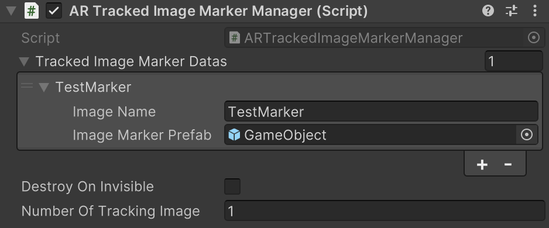

ARTrackedImageMarkerManager
Manage the tracking functionality of AR image markers. You can use the object generation function at the start of marker recognition and the events at the start and end of recognition.
Important
When using it, please enable #define definition in the source code.
namespace GarageKit.ARFoundationExtention
[DisallowMultipleComponent]
[RequireComponent(typeof(ARTrackedImageManager))]
public class ARTrackedImageMarkerManager : MonoBehaviour
Inheritance
ARTrackedImageMarkerManager -> MonoBehaviour
Inspector
Properties
| member | type | description |
|---|---|---|
| trackedImageMarkerDatas | List<ARTrackedImageMarkerData> | Image marker to be generated Prefab data list |
| destroyOnInvisible | bool | Perform automatic Destroy based on offscreen detection |
| numberOfTrackingImage | int | Maximum number of images that can be tracked simultaneously |
Methods
Image table during tracking
public Dictionary<string, ARTrackedImage> TrackedImages { get; }
Callback when image marker recognition starts
public Action<ARTrackedImage> OnAddedImageMarker
Callback when image marker recognition ends
public Action<ARTrackedImage> OnRemoveImageMarker
Deleting image marker name from tracking marker
public void RemoveImageMarkerByImageName(string imageName)
Resetting all tracking markers
public void ResetImageMarkers()
ARTrackedImageMarkerData
Structure of generated prefab data corresponding to image marker
namespace GarageKit.ARFoundationExtention
[Serializable]
public class ARTrackedImageMarkerData
Properties
| member | type | description |
|---|---|---|
| imageName | string | image marker name |
| imageMarkerPrefab | GameObject | Reference of prefab to generate |